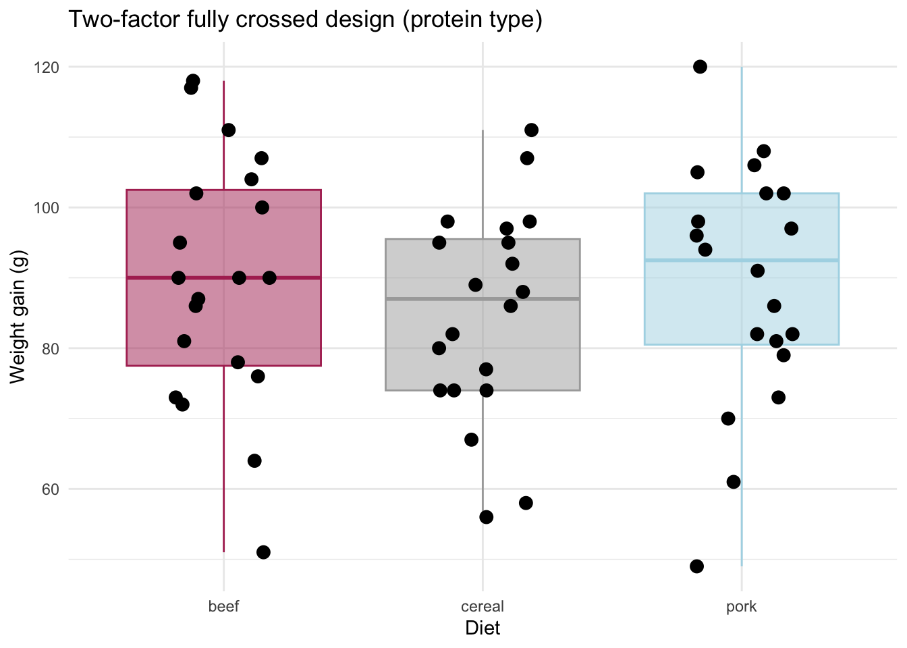
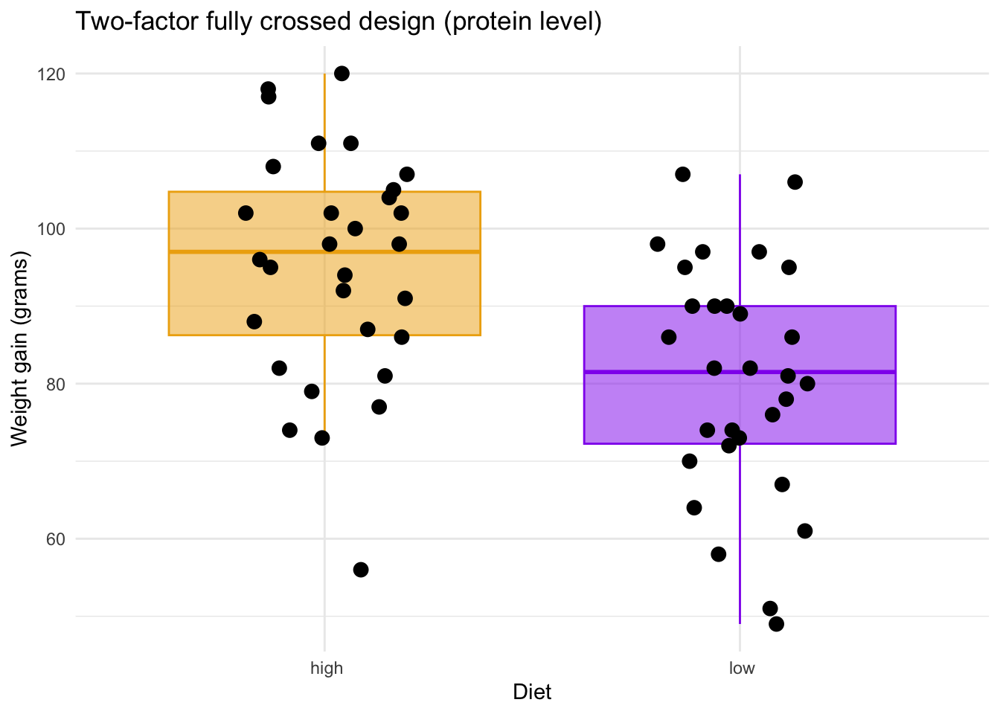
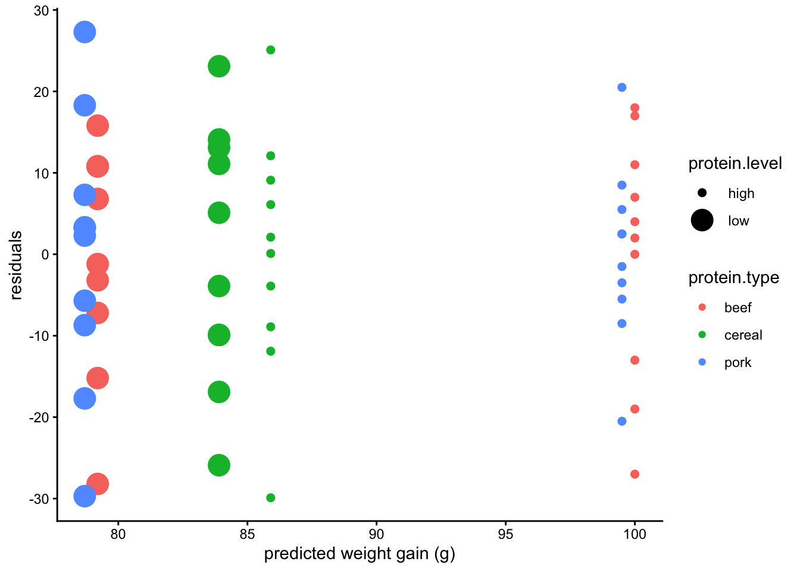

23 Mon Nov 02 - Two categorical explanatory variables
Today, we will study two-factor fully crossed designs (full factorial designs). This is the simplest type of analysis involving two categorical variables that are fixed.
Fully crossed means that all the combinations of the levels of the factors/predictors/explanatory variables are considered.
Such designs allow us to measure the:
main effect independent of (i.e. pooling over) the other effect; and
interaction between factors, measuring the the effects of one factor depend on the groups of teh other factors. The absence of an interaction means that the joint effect of the factors is predictable by adding their individual effects. An interaction indicates synergistic or antagonistic effects.
Examples. Linton et al. (2009) examined the effect of insecticide on red land crabs on Christmas island. The design involves two fixed factors: bait types (with and without insecticide) and food level (2, 4 or ad libitum). The design is a completely randomized experimental design. The response variable is ovary dry mass.
Breitwieser et al. (2016) survey variegated scallops, Mimachlamys varia. Five sites were chosen (4 contaminated and one clean). The authors sampled scallops at two times of year (March and September). The response variable is the biomarker, malondialdehyde (MDA) (\(\mu\)g/mg fresh tissue). This is an observational (non-experimental design).
The 8th edition of Snedecor and Cochran (1989) reported gains in weight in rats given diets that were high or low protein; and where the protein was beef, pork, or cereal. This was a full factorial experimental design (6 possible diets).
23.1 Data
diet.data = read.csv("https://raw.githubusercontent.com/ahurford/biol-4605-data/refs/heads/main/data/rat-diet.csv")
diet.data## protein.type protein.level weight
## 1 beef high 73
## 2 beef high 102
## 3 beef high 118
## 4 beef high 104
## 5 beef high 81
## 6 beef high 107
## 7 beef high 100
## 8 beef high 87
## 9 beef high 117
## 10 beef high 111
## 11 cereal high 98
## 12 cereal high 74
## 13 cereal high 56
## 14 cereal high 111
## 15 cereal high 95
## 16 cereal high 88
## 17 cereal high 82
## 18 cereal high 77
## 19 cereal high 86
## 20 cereal high 92
## 21 pork high 94
## 22 pork high 79
## 23 pork high 96
## 24 pork high 98
## 25 pork high 102
## 26 pork high 102
## 27 pork high 108
## 28 pork high 91
## 29 pork high 120
## 30 pork high 105
## 31 beef low 90
## 32 beef low 76
## 33 beef low 90
## 34 beef low 64
## 35 beef low 86
## 36 beef low 51
## 37 beef low 72
## 38 beef low 90
## 39 beef low 95
## 40 beef low 78
## 41 cereal low 107
## 42 cereal low 95
## 43 cereal low 97
## 44 cereal low 80
## 45 cereal low 98
## 46 cereal low 74
## 47 cereal low 74
## 48 cereal low 67
## 49 cereal low 89
## 50 cereal low 58
## 51 pork low 49
## 52 pork low 82
## 53 pork low 73
## 54 pork low 86
## 55 pork low 81
## 56 pork low 97
## 57 pork low 106
## 58 pork low 70
## 59 pork low 61
## 60 pork low 82Plot the data to assess assumptions:
library(ggplot2)
ggplot(diet.data, aes(x = factor(protein.type), y = weight)) +
# 1. Add the box plot layer
geom_boxplot(
outlier.shape = NA, # CRITICAL: Prevents duplicate plotting of outliers
fill = c("maroon", "darkgray", "lightblue"),
color = c("maroon", "darkgray", "lightblue"), # Memorial colours
alpha = 0.5 # some transparency so we can still read the plot
) +
# 2. Add the strip plot (jittered points) layer
geom_jitter(
position = position_jitter(width = 0.2, height = 0), # Controls data spreading
color = "black", # Pick a distinct color for raw data points
size = 3, # Modify point size
) +
labs(
x = "Diet",
y = "Weight gain (g)",
title = "Two-factor fully crossed design (protein type)"
)+theme_minimal()
library(ggplot2)
ggplot(diet.data, aes(x = factor(protein.level), y = weight)) +
# 1. Add the box plot layer
geom_boxplot(
outlier.shape = NA, # CRITICAL: Prevents duplicate plotting of outliers
fill = c("darkgoldenrod2", "purple2"),
color = c("darkgoldenrod2", "purple2"), # Memorial colours
alpha = 0.5 # some transparency so we can still read the plot
) +
# 2. Add the strip plot (jittered points) layer
geom_jitter(
position = position_jitter(width = 0.2, height = 0), # Controls data spreading
color = "black", # Pick a distinct color for raw data points
size = 3, # Modify point size
) +
labs(
x = "Diet",
y = "Weight gain (grams)",
title = "Two-factor fully crossed design (protein level)"
)+theme_minimal()
Let’s find the means of all the groups.
## [1] 87.86667## protein.level mean
## 1 high 95.13333
## 2 low 80.60000## protein.type mean
## 1 beef 89.6
## 2 cereal 84.9
## 3 pork 89.1## protein.type protein.level mean
## 1 beef high 100.0
## 2 beef low 79.2
## 3 cereal high 85.9
## 4 cereal low 83.9
## 5 pork high 99.5
## 6 pork low 78.7Let’s also plot the residuals vs. predicted values as in Figures 7.1-7.3 (p116-119) of Quinn and Keough. As has been noted in class previously, plotting the residuals requires fitting a model. The fitted models include an interaction term as in Boxes 7.1-7.3 in Quinn and Keough.
require(ggplot2)
diet.model = lm(weight ~ protein.type + protein.level + protein.type*protein.level, data = diet.data)
diet.data$residuals = diet.model$residuals
diet.data$predicted = diet.model$fitted.values
ggplot(diet.data, aes(x = predicted, y = residuals, color=protein.type))+
geom_point(aes(size = protein.level))+theme_classic()+xlab("predicted weight gain (g)")
We are examining this plot to determine if the residuals have homogeneous variance. The residuals look good, in this respect. This plot also shows that the interaction effect is likely significant, because whether the high level diet improves weight increase depends on the type of protein.23.2 Write the model
I will write the model in the notation of Quinn and Keough p120.
\[ y_{ijk} = \mu + \alpha_i + \beta_j + (\alpha \beta)_{ij} + \epsilon_{ijk} \]
where \(i\) are the different levels of protein type (beef, pork, cereal), \(j\) are the different levels of protein (low, high), and \(k\) is a particular observation.
The expected (predicted) value is the model without the residuals:
\[ E[y_{ij}] = \mu + \alpha_{i} + \beta_j + (\alpha \beta)_{ij} \]
These symbols correspond to the following variables:
\[ (\mbox{weight gain})_{ijk} = (\mbox{overall mean of weight gain}) + (\mbox{effect of protein type})_i \\ + (\mbox{effect of protein level})_j \\ + (\mbox{interaction effect between protein type and level})_{ij} + \epsilon_{ijk} \]
Note that we can use this index notation and then we do not need to include indicator (dummy) variables corresponding to the levels of treatment.
23.3 Execute the model
##
## Call:
## lm(formula = weight ~ protein.type + protein.level + protein.type *
## protein.level, data = diet.data)
##
## Residuals:
## Min 1Q Median 3Q Max
## -29.90 -8.75 2.20 10.80 27.30
##
## Coefficients:
## Estimate Std. Error t value Pr(>|t|)
## (Intercept) 1.000e+02 4.632e+00 21.589 < 2e-16 ***
## protein.typecereal -1.410e+01 6.551e+00 -2.152 0.03585 *
## protein.typepork -5.000e-01 6.551e+00 -0.076 0.93944
## protein.level low -2.080e+01 6.551e+00 -3.175 0.00247 **
## protein.typecereal:protein.level low 1.880e+01 9.264e+00 2.029 0.04736 *
## protein.typepork:protein.level low -2.673e-16 9.264e+00 0.000 1.00000
## ---
## Signif. codes: 0 '***' 0.001 '**' 0.01 '*' 0.05 '.' 0.1 ' ' 1
##
## Residual standard error: 14.65 on 54 degrees of freedom
## Multiple R-squared: 0.2848, Adjusted R-squared: 0.2185
## F-statistic: 4.3 on 5 and 54 DF, p-value: 0.002299The reference category (intercept) estimate is the mean weight gain for a high level beef diet. The group mean for this group is 100 grams of weight gained. The overall mean has previously been calculated as \(\mu = 87.9\) grams of weight gained. The effect of beef for the low level diet is (Intercept)$estimate - protein.level low$estimate = 100 - 20.8 = 79.2, which we can check against our earlier calculation.
Our group means can be calculated by using either our model formula (in between the =) or the diet.model estimates (on the right hand side of the equal)
\[\begin{equation} \begin{array}{lll} y_{\mbox{beef, high}} &= 87.9 + \alpha_{\mbox{beef}} + \beta_{\mbox{high}} + \alpha \beta_{\mbox{beef,high}} &= 100 \\ y_{\mbox{beef, low}} &= 87.9 + \alpha_{\mbox{beef}} + \beta_{\mbox{low}} + \alpha \beta_{\mbox{beef,low}} &= 100- 20.8 = 79.2 \\ y_{\mbox{pork, high}} &= 87.9 + \alpha_{\mbox{pork}} + \beta_{\mbox{high}} + \alpha \beta_{\mbox{pork,high}} &= 100 - 0.5 = 99.5 \\ y_{\mbox{pork, low}} &= 87.9 + \alpha_{\mbox{pork}} + \beta_{\mbox{low}} + \alpha \beta_{\mbox{pork,low}} &= 100 - 0.5 - 20.8 + 0 = 78.7 \\ y_{\mbox{cereal, high}} &= 87.9 + \alpha_{\mbox{cereal}} + \beta_{\mbox{high}} + \alpha \beta_{\mbox{cereal,high}} &= 100 - 14.1 = 85.9 \\ y_{\mbox{cereal, low}} &= 87.9 + \alpha_{\mbox{cereal}} + \beta_{\mbox{low}} + \alpha \beta_{\mbox{cereal,low}} &= 100 - 14.1 - 20.8 + 18.8 = 83.9\\ \end{array} \end{equation}\]
Then our parameter estimates are:
\[ \mu = 87.9; \qquad \alpha_{\mbox{beef}} = \dfrac{100+79.2}{2} - 87.9 = 1.7; \qquad \beta_{\mbox{high}}=\dfrac{100+99.5+85.9}{3}-87.9 = 7.23; \\ \alpha \beta_{\mbox{beef,high}} = 100 - 87.9 - 1.7 - 7.23 = 3.17. \]
where similar calculations can be completed for the other parameter estimates.
## Analysis of Variance Table
##
## Response: weight
## Df Sum Sq Mean Sq F value Pr(>F)
## protein.type 2 266.5 133.3 0.6211 0.5411319
## protein.level 1 3168.3 3168.3 14.7666 0.0003224 ***
## protein.type:protein.level 2 1178.1 589.1 2.7455 0.0731879 .
## Residuals 54 11586.0 214.6
## ---
## Signif. codes: 0 '***' 0.001 '**' 0.01 '*' 0.05 '.' 0.1 ' ' 123.4 Degrees of freedom and SS table
\[ \begin{array}{lllll} \mbox{GLM} & y - \mu &=& \alpha A + \beta B + (\alpha \beta) AB &+ \epsilon \\ \mbox{df} & 60-1 & = & (3-1) + (2-1) + (3-1)\times(2-1) & + 54 \ \ \\ \mbox{SS} & & = & 113.3 + 3168.3 + 589.1 & + \ \214.6 \\ \end{array} \]
where \(A\) and \(B\) are indicator (dummy) variables. The degrees of freedom of the interaction term is 2 which is the product of the degrees of freedom for each variable involved in the interaction term: i.e., 3 levels of protein type - 1 = 2; and 2 levels for protein level - 1 = 1.
23.5 Calculate the likelihood ratio and R\(^2\)
SStype = anova(diet.model)$`Sum Sq`[1]
SSlevel = anova(diet.model)$`Sum Sq`[2]
SSinteraction = anova(diet.model)$`Sum Sq`[3]
SSmodel = SStype+SSlevel+SSinteraction
SSTotal = sum(anova(diet.model)$`Sum Sq`)
R2 = SSmodel/SSTotal
R2## [1] 0.2847677## [1] 23258.77We can also calculate the likelihood for each model component (see Dr. Schneider’s notes), although we have not covered this in class.
23.6 Science conclusion
Protein level affects weight gain in rats, but this is less interesting than whether the type of protein matters. At the \(\alpha = 0.05\) significance level we cannot conclude that protein type impacts weight gain.
Given the data, a posthoc comparison is warranted. Specifically, we should consider cereal vs. meat protein (combining pork and beef). We may then find that the interaction term is significant, but that the type of protein: meat vs. cereal only matters when the level is high.